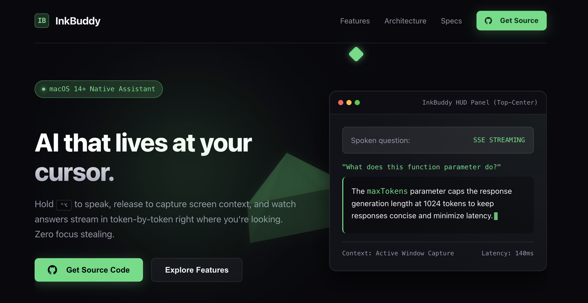

InkBuddy · AI UX Engineering
Redefining the AI interaction loop.
InkBuddy is a native macOS companion that eliminates "focus stealing." By utilizing a push-to-talk trigger (⌃⌥) and active window capture, it delivers AI responses token-by-token in a non-activating HUD panel directly at the user's cursor.
- 140msLatency
- ActiveWindow Capture
- 1024maxTokens
- The Breakthrough
- Moving AI from a separate chat window into the spatial context of the OS, allowing for zero-friction context sharing and instant retrieval.